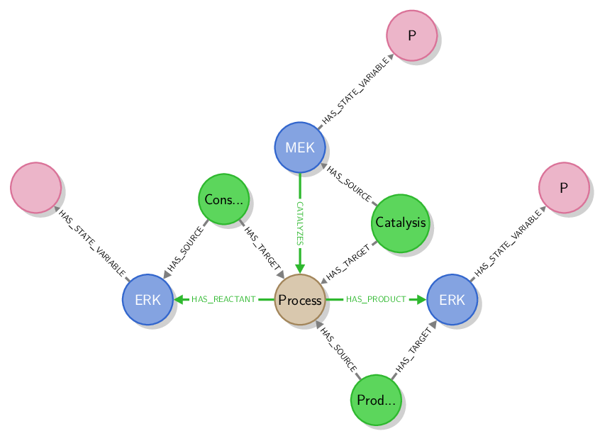

Completion rules
When the result of a query is a subgraph (including a unique node or relationship), it may be completed to form a “complete subgraph” using the stonpy.completor module. The “complete subgraph” can then be converted to a valid SBGN map using the stonpy.converter module. To form the “complete subgraph”, the completion algorithm runs through all relationships and nodes of the input subgraph and completes them (i.e. adds nodes and relationships to the subgraph) following the completion rules described below. Completion may be recursive: a completion rule may add a node or a relationship to the list of nodes to be completed.
Relationships
A relationship will be completed by its source and target nodes, which will themselves be completed. A relationship modelling an arc (such as CATALYZES, INHIBITS, PRODUCES, etc.) will also be completed with the graph node modelling the same arc, which will itself be completed. For example, in the figure below, the relationship CATALYZES (in green) will be completed by the node labelled Catalysis (also in green), which will itself be completed.
{kind=link}
Nodes
Nodes are completed following the rules given in the table below. A completion rule is applied to a given node only if that node includes the label given in the “Node” column. If it is the case, the Neo4j database will be queried for all relationships having the type given in the “Relationship type” column and having the node as its source or target, depending on the value in the “Node role” column. The node will be completed with the resulting relationships, which will themselves not be completed. The node will also be completed with the “other node” of each relationship (i.e. the target node if the node to be completed is the source of the relationship, and the source node otherwise), which will itself be completed if the value of the “Recursive” column is “Yes”.
For example, the first rule states that any node that models a glyph (i.e. that includes the “Glyph” label) should be completed with all relationships in the Neo4j graph whose type is “HAS_LABEL” and whose source is the node. Furthermore, the target of such relationships should also be completed.
| Node | Relationship type | Node role | Recursive |
| Glyph | HAS_LABEL | Source | Yes |
| Glyph | HAS_BBOX | Source | No |
| Glyph | IS_IN_COMPARTMENT | Source | Yes |
| Glyph | HAS_STATE_VARIABLE | Source | Yes |
| Glyph | HAS_UNIT_OF_INFORMATION | Source | Yes |
| Glyph | HAS_SUBUNIT | Source | Yes |
| Glyph | HAS_OUTCOME | Source | Yes |
| Glyph | HAS_TERMINAL | Source | Yes |
| Glyph | HAS_EXISTENCE | Source | Yes |
| Glyph | HAS_LOCATION | Source | Yes |
| Glyph (if not AuxilliaryUnit) | HAS_GLYPH | Target | No |
| StoichiometricProcess | HAS_PORT | Source | No |
| StoichiometricProcess (if complete_process_modulations is True) | HAS_TARGET | Target | Yes |
| LogicalOperator | HAS_PORT | Source | Yes |
| EquivalenceOperator | HAS_PORT | Source | Yes |
| AuxilliaryUnit | HAS_GLYPH | Target | Yes |
| Port | HAS_PORT | Target | Yes |
| Port | HAS_SOURCE | Target | Yes |
| Port | HAS_TARGET | Target | Yes |
| Bbox | HAS_BBOX | Target | Yes |
| Start | HAS_START | Target | Yes |
| Next | HAS_NEXT | Target | Yes |
| End | HAS_END | Target | Yes |
| Label | HAS_LABEL | Target | Yes |
| Arc | HAS_PORT | Source | No |
| Arc | HAS_OUTCOME | Source | Yes |
| Arc | HAS_ARC | Target | No |
| Arc | HAS_CARDINALITY | Source | Yes |
| Arc | HAS_SOURCE | Source | Yes |
| Arc | HAS_TARGET | Source | Yes |
| Arc | HAS_START | Source | No |
| Arc | HAS_END | Source | No |
| Arc | HAS_NEXT | Source | No |
| Arcgroup | HAS_ARC | Source | Yes |
| Arcgroup | HAS_ARCGROUP | Target | No |
| Map | HAS_GLYPH | Source | Yes |
| Map | HAS_ARC | Source | Yes |
| Map | HAS_ARCGROUP | Source | Yes |